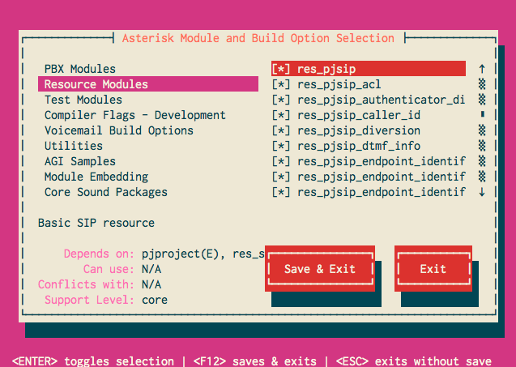

Overview
Asterisk 12 and later versions contain two SIP stacks: one, the original chan_sip SIP channel driver that has been present in all previous releases of Asterisk, and a new SIP stack that is based on pjproject. For more information on configuring the new SIP stack, see Configuring res_pjsip.
Because earlier releases of pjproject cannot build shared object libraries, some changes were required in order to use it with Asterisk 12. As such, Asterisk requires pjproject version 2.4 or later. Alternatively, an Asterisk compatible version of pjproject is available on github , or - depending on your Linux distribution - available as a package.
Earlier versions of pjproject downloaded from www.pjsip.org will not work with Asterisk 12.
Building and Installing pjproject from Source
If you're using Asterisk 13.8.0 or greater, consider using the Bundled Version of pjproject.
Downloading pjproject
Obtaining pjproject from Teluu:
Use
wgetto pull the latest version fromwww.pjsip.org. Note that the instructions assume that this is 2.4.5; for the latest version, refer towww.pjsip.org:# wget http://www.pjsip.org/release/2.4.5/pjproject-2.4.5.tar.bz2 # tar -xjvf pjproject-2.4.5.tar.bz2
Obtaining the latest pjproject from the svn repo:
Use
svnto install the latest version from www.pjsip.org.# svn co http://svn.pjsip.org/repos/pjproject/trunk/ pjproject-trunk
Obtaining (old asterisk) pjproject from the github repo:
If you do not have git, install git on your local machine.
Checkout the Asterisk 12-compatible pjproject from the Asterisk github repo:
# git clone https://github.com/asterisk/pjproject pjproject
And that's it!
Building and Installing pjproject
The first step in building and installing pjproject is configuring it using configure. For Asterisk, this is arguably the most important step in this process. pjproject embeds a number of third party libraries which can conflict with versions of those libraries that may already be installed on your system. Asterisk will not use the embedded third party libraries within pjproject. As an example, if you are going to build the res_srtp module in Asterisk, then you must specify "--with-external-srtp" when configuring pjproject to point to an external srtp library.
Additionally, Asterisk REQUIRES two or three options to be passed to configure:
--enable-shared- Instruct pjproject to build shared object libraries. Asterisk will only use shared objects from pjproject.--prefix- Specify root install directory for pjproject. This will be dependent on your distribution of Linux; typically this is/usrfor most systems. The default is/usr/local--libdir- Specify the installation location for object code libraries. This may need to be set to/usr/lib64for some 64-bit systems such as CentOS.
Compiler DEFINEs
Users who expect to deal with Contact URIs longer than 256 characters or hostnames longer than 128 characters should set
PJSIP_MAX_URL_SIZEandPJ_MAX_HOSTNAMEas appropriate.- IPv6 support in pjproject is, by default, disabled. To enable it, set
PJ_HAS_IPV6to1. - The default configuration of pjproject enables "assert" functions which can cause Asterisk to crash unexpectedly. To disable the asserts, set
NDEBUGto1. - The default number of TCP/TLS incoming connections allowed is 64. If you plan on having more than that you'll need to set
PJ_IOQUEUE_MAX_HANDLESto the new limit.
With the exception of PJ_IOQUEUE_MAX_HANDLES, the options can be set in CFLAGS and passed to configure as follows: './configure CFLAGS="-DNDEBUG=1 -DPJ_HAS_IPV6=1"', etc. A better way is to create or edit the pjlib/include/pj/config_site.h file and set them all there. Here's a reasonable starting point that also includes some performance tunings...
#define NDEBUG 1 #define PJ_HAS_IPV6 1 #define PJ_MAX_HOSTNAME 256 #define PJSIP_MAX_URL_SIZE 512 /* The upper limit on MAX_HANDLES is determined by * the value of FD_SETSIZE on your system. For Linux * this is usually 1024. The following code sets it * to whatever FD_SETSIZE is or you can set it to a * specific number yourself. pjproject will not * compile if you set it to greater than FD_SETSIZE. */ #include <sys/select.h> #define PJ_IOQUEUE_MAX_HANDLES (FD_SETSIZE) /* Set for maximum server performance. * In tests, setting these parameters reduced * CPU load by approximately 25% for the same number * of calls per second. Your results will vary, * of course. */ #define PJ_SCANNER_USE_BITWISE 0 #define PJ_OS_HAS_CHECK_STACK 0 #define PJ_LOG_MAX_LEVEL 3 #define PJ_ENABLE_EXTRA_CHECK 0 #define PJSIP_MAX_TSX_COUNT ((64*1024)-1) #define PJSIP_MAX_DIALOG_COUNT ((64*1024)-1) #define PJSIP_UDP_SO_SNDBUF_SIZE (512*1024) #define PJSIP_UDP_SO_RCVBUF_SIZE (512*1024) #define PJ_DEBUG 0 #define PJSIP_SAFE_MODULE 0 #define PJ_HAS_STRICMP_ALNUM 0 #define PJ_HASH_USE_OWN_TOLOWER 1 /* It is imperative that PJSIP_UNESCAPE_IN_PLACE remain 0 or undefined. Enabling it will result in SEGFAULTS when URIs containing escape sequences are encountered. */ #define PJSIP_UNESCAPE_IN_PLACE 0 #undef PJ_TODO #define PJ_TODO(x)
Other common configure options needed for pjproject are listed below:
| Library | Configure option | Notes |
|---|---|---|
| libspeex shared objects | --with-external-speex | Make sure that the library development headers are accessible from pjproject. The CFLAGS and LDFLAGS environment variables may be used to set the include/lib paths. |
| libsrtp shared objects | --with-external-srtp | Make sure that the library development headers are accessible from pjproject. The CFLAGS and LDFLAGS environment variables may be used to set the include/lib paths. |
| GSM codec | --with-external-gsm | Make sure that the library development headers are accessible from pjproject. The CFLAGS and LDFLAGS environment variables may be used to set the include/lib paths. |
| Disable sound | --disable-sound | Let Asterisk perform sound manipulations. |
| Disable resampling | --disable-resample | Let Asterisk perform resample operations. |
| Disable video | --disable-video | Disable video support in pjproject's media libraries. This is not used by Asterisk. |
| Disable AMR | --disable-opencore-amr | Disable AMR codec support. This is not used by Asterisk |
These are some of the more common options used to disable third party libraries in pjproject. However, other options may be needed depending on your system - see
for a full list of configure options you can pass to pjproject.configure --help
Now that you understand the pjproject configure options available, change directories to the pjproject source directory:# cd pjproject
In the pjproject source directory, run the configure script with the options needed for your system:
# ./configure --prefix=/usr --enable-shared --disable-sound --disable-resample --disable-video --disable-opencore-amr CFLAGS='-O2 -DNDEBUG'
A few recommended options are shown. That includes setting a couple important CFLAGS, -O2 for common optimizations and -DNDEBUG to disable debugging code and assertions.
Build pjproject:
# make dep # make
Install pjproject
# make install
Update shared library links.
# ldconfig
Verify that pjproject has been installed in the target location by looking for, and finding the various pjproject modules:
# ldconfig -p | grep pj libpjsua.so (libc6,x86-64) => /usr/lib/libpjsua.so libpjsip.so (libc6,x86-64) => /usr/lib/libpjsip.so libpjsip-ua.so (libc6,x86-64) => /usr/lib/libpjsip-ua.so libpjsip-simple.so (libc6,x86-64) => /usr/lib/libpjsip-simple.so libpjnath.so (libc6,x86-64) => /usr/lib/libpjnath.so libpjmedia.so (libc6,x86-64) => /usr/lib/libpjmedia.so libpjmedia-videodev.so (libc6,x86-64) => /usr/lib/libpjmedia-videodev.so libpjmedia-codec.so (libc6,x86-64) => /usr/lib/libpjmedia-codec.so libpjmedia-audiodev.so (libc6,x86-64) => /usr/lib/libpjmedia-audiodev.so libpjlib-util.so (libc6,x86-64) => /usr/lib/libpjlib-util.so libpj.so (libc6,x86-64) => /usr/lib/libpj.so
Finally, verify that Asterisk detects the pjproject libraries. In your Asterisk source directory:
# ./configure # make menuselect
- Browse to the Resource Modules category and verify that the
res_pjsipmodules are enabled:
 - You're all done! Now, build and install Asterisk as your normally would.
Troubleshooting
First, if you're using Asterisk 13.8.0 or greater, consider switching to the Bundled Version of pjproject
Asterisk fails to detect pjproject libraries
After building and installing pjproject, Asterisk fails to detect any of the libraries - the various res_pjsip components cannot be selected in Asterisk's menuselect
Solution
Verify that Asterisk's config.log shows the following:
configure:23029: checking for PJPROJECT configure:23036: $PKG_CONFIG --exists --print-errors "libpjproject" Package libpjproject was not found in the pkg-config search path. Perhaps you should add the directory containing `libpjproject.pc' to the PKG_CONFIG_PATH environment variable No package 'libpjproject' found
- Make sure you have
pkg-configinstalled on your system. - pjproject will install the package config file in
/usr/lib/pkgconfig. Some distributions, notably Fedora, will instead look for the library in/usr/lib64. Update yourPKG_CONFIG_PATHenvironment variable with/usr/lib/pkgconfigand re-run Asterisk'sconfigurescript.
pjproject fails to build: errors related to opencore_amr
When building pjproject, errors about opencore_amr are displayed, e.g.:
output/pjmedia-codec-x86_64-unknown-linux-gnu/opencore_amr.o:(.rodata+0x60): multiple definition of `pjmedia_codec_amrnb_framelenbits' output/pjmedia-codec-x86_64-unknown-linux-gnu/opencore_amr.o:(.rodata+0x60): first defined here output/pjmedia-codec-x86_64-unknown-linux-gnu/opencore_amr.o:(.rodata+0x80): multiple definition of `pjmedia_codec_amrnb_framelen' output/pjmedia-codec-x86_64-unknown-linux-gnu/opencore_amr.o:(.rodata+0x80): first defined here output/pjmedia-codec-x86_64-unknown-linux-gnu/opencore_amr.o:(.rodata+0x20): multiple definition of `pjmedia_codec_amrwb_framelenbits' output/pjmedia-codec-x86_64-unknown-linux-gnu/opencore_amr.o:(.rodata+0x20): first defined here output/pjmedia-codec-x86_64-unknown-linux-gnu/opencore_amr.o:(.rodata+0x40): multiple definition of `pjmedia_codec_amrwb_framelen' output/pjmedia-codec-x86_64-unknown-linux-gnu/opencore_amr.o:(.rodata+0x40): first defined here ...
Solution
You already have the AMR codec installed. Run configure with the --disable-opencore-amr option specified.
pjproject fails to build: video linker errors
When building pjproject, linker errors referring to various video methods are displayed, e.g.:
/home/mjordan/projects/pjproject/pjmedia/lib/libpjmedia-videodev.so: undefined reference to `pjmedia_format_init_video' /home/mjordan/projects/pjproject/pjmedia/lib/libpjmedia.so: undefined reference to `pjmedia_video_format_mgr_instance' /home/mjordan/projects/pjproject/pjmedia/lib/libpjmedia-videodev.so: undefined reference to `pjmedia_format_get_video_format_detail' /home/mjordan/projects/pjproject/pjmedia/lib/libpjmedia-videodev.so: undefined reference to `pjmedia_get_video_format_info'
Solution
Run configure with either or both --disable-video or --disable-v4l2
ldconfig fails to display pjproject libraries
After building pjproject, the dump provided by ldconfig -p doesn't display any libraries.
Solution
Run ldconfig to re-configure dynamic linker run-time bindings. This will need to be run with super user permissions.
pjproject fails to build on Raspberry Pi
pjproject/Asterisk fails to compile on your Raspberry Pi (raspbian) due to pjproject configure scripts not detecting endianness:
/usr/include/pj/config.h:243:6: error: #error Endianness must be declared for this processor
In file included from /usr/include/pj/types.h:33:0,
from /usr/include/pjsip/sip_config.h:27,
from /usr/include/pjsip/sip_types.h:34,
from /usr/include/pjsip.h:24,
from conftest.c:290:
/usr/include/pj/config.h:1161:4: error: #error "PJ_IS_LITTLE_ENDIAN is not defined!"
/usr/include/pj/config.h:1165:4: error: #error "PJ_IS_BIG_ENDIAN is not defined!"
Solution
- Edit
/usr/include/pj/config.h(using the editor of your choice) - Replace this code:
/*
* ARM, bi-endian, so raise error if endianness is not configured
*/
# undef PJ_M_ARMV4
# define PJ_M_ARMV4 1
# define PJ_M_NAME "armv4"
# define PJ_HAS_PENTIUM 0
# if !PJ_IS_LITTLE_ENDIAN && !PJ_IS_BIG_ENDIAN
# error Endianness must be declared for this processor
# endif
With this:
/*
* ARM, bi-endian, so raise error if endianness is not configured
*/
# undef PJ_M_ARMV4
# define PJ_M_ARMV4 1
# define PJ_M_NAME "armv4"
# define PJ_HAS_PENTIUM 0
# define PJ_IS_LITTLE_ENDIAN 1
# define PJ_IS_BIG_ENDIAN 0
Then recompile. This workaround was taken from issue ASTERISK-23315.
Uninstalling a Previous Version of pjproject
Typically, other versions of pjproject will be installed as static libraries. These libraries are not compatible with Asterisk and can confuse the build process for Asterisk 12. As such, any static libraries must be removed prior to installing the compatible version of pjproject.
pjproject provides an uninstall make target that will remove previous installations. It can be called from the pjproject source directory like:
# make uninstall
If you don't have an "uninstall" make target, you may need to fetch and merge the latest pjproject from https://github.com/asterisk/pjproject
Alternatively, the following should also remove all previously installed static libraries:
# rm -f /usr/lib/libpj*.a /usr/lib/libmilenage*.a /usr/lib/pkgconfig/libpjproject.pc
Finally, you will need to update shared library links:
# ldconfig
If you want to run a sanity check, you can verify that pjproject has been uninstalled by ensuring no pjproject modules remain on the system:
# ldconfig -p | grep pj
If running the above command yields no results, that's it! You have successfully uninstalled pjproject from your system.
Using the Bundled Version of pjproject
Beginning with Asterisk 13.8.0, a stable version of pjproject is included in Asterisk's ./third-party directory.
Why would you want to do this? Several reasons:
- Predictability: When built with the bundled pjproject, you're always certain of the version you're running against, no matter where it's installed.
- Scalability: The default pjproject configuration is optimized for client applications. The bundled version's configuration is optimized for server use.
- Usability: Several feature patches, which have been submitted upstream to pjproject but not yet released, have been included in the bundled version.
- Safety: If a security or critical issue is identified in pjproject, it can be patched and made available with a new release of Asterisk instead of having to waiting for a new release of pjproject.
- Maintainability: You don't need to build and install separate packages.
- Supportability: When asking others for help, there's no question about which version of pjproject you're using and what options it was compiled with.
- Compatibility: This is especially important from a development perspective because it means we can be sure that new pjproject APIs that have been introduced or old ones that have been deprecated,
are handled and tested appropriately in Asterisk. - Reliability: You can be sure that Asterisk was tested against the bundled version.
Usage:
First, run ./contrib/scripts/install_prereq. Building the bundled pjproject requires the python development libraries which install_prereq has already installed. All you have to do now is add the --with-pjproject-bundled option to your Asterisk ./configure command line and remove any other --with-pjproject option you may have specified.
# cd /path/asterisk-source-dir # ./configure --with-pjproject-bundled # make && make install
The configure and make processes will download the correct version of pjproject, patch it, configure it, build it, and finally link Asterisk to it statically. No changes in runtime configuration are required. You can leave your system-installed version of pjproject in place if needed; once compiled with the --with-pjproject-bundled option, Asterisk will ignore any other installed versions of pjproject.
Attachments:
{kind=link}
{kind=link}
{kind=link}
{kind=link}
{kind=link}
Comments:
|
If You have pjproject installed not system wide (for example, not in /usr but --prefix=/opt/asterisk), then set export PKG_CONFIG_PATH=/opt/asterisk/lib/pkgconfig/ before running Asterisk configure --prefix=/opt/asterisk --with-pjproject=/opt/asterisk Otherwise configure fails. |
|
I ran in to problems using the above instructions when installing on 64-bit CentOS. When I got to step 6 and ran 'ldconfig -p | grep pj' no libraries were displayed. I fixed by running step 2 with '–prefix=/usr --libdir=/usr/lib64' e.g. ./configure --libdir=/usr/lib64 --prefix=/usr --enable-shared --disable-sound --disable-resample --disable-video --disable-opencore-amr |
|
Maybe someone here is smarter then me and can explain if this is a bug in the pjproject source? When building pjproject with ./configure --prefix=/usr/lib64 all seams fine when I runldconfig but asterisk's menuselect does not see pjsip. it turns out that instead of placing libpjproject.pc in /usr/lib64/pkgconfig it gets placed in /usr/lib64/lib/pkgconfig but if I then just move the libpjproject.pc back to lib64/pkgconfig and update the path it works? it gave me some trouble. |
|
Typically --prefix is used to set the root install path. So on a 64bit system things will get installed in <prefix>/bin, <prefix>/lib64, <prefix>/share, etc. The pjproject default is /usr/local. If you want everything installed directly in /usr, just specify --prefix=/usr. If you really want to specify the lib directory, use --libdir.
|
|
I ran in to problems using the above instructions when installing on 64-bit CentOS.When i try to load pjsip modules, displayed this error for example : Unable to load module chan_pjsip.so |
|
What version of Asterisk?
chan_pjsip is dependent on res_pjsip. Did it load? Were there any other load failures? Do you have autoload=yes in modules.conf? If not, make sure all of the res_pjsip* modules are loaded before chan_pjsip.
|
|
[pjproject] Unpacking /tmp/pjproject-2.4.5.tar.bz2
I shouldn't have to worry about trying to figure out all the prerequisites I need to install with something that is a 'bundle'. Just my opinion. |
|
"I shouldn't have to worry about trying to figure out all the prerequisites I need to install with something that is a 'bundle'. Just my opinion." No you shouldn't. Let me look into it.
|
|
Try running
|
|
I used to have the same issue just install this libraries you will be fine |
|
This kills the whole point of a bundle. I might as well just install it manually like I have been doing using my config script that disables those codecs but thats going backwards. Going to see what install_prereq does.
|
|
This brings up a Window that says: ITU-T telephone code and gives examples for Australia and France. Seems like something that should be automated. Also this does not fix the issue: [pjproject] Configuring with --prefix=/opt/pjproject --with-external-speex --with-external-gsm --with-external-srtp --with-external-pa --disable-video --disable-v4l2 --disable-sound --disable-opencore-amr --disable-ilbc-codec --without-libyuv --disable-g7221-codec --enable-epoll |
|
Unfortunately that window is from libspeex, not Asterisk or pjproject. What platform are you running on? libsrtp should have been installed by install_prereq.
|
|
I am on Debian 8.3 x64 |
|
I tried ./configure --with-pjproject-bundled but it gives below error.
checking for embedded pjproject (may have to download)... configuring
|
|
You need the bzip2 package installed. |